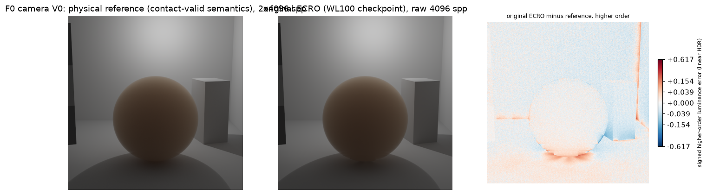
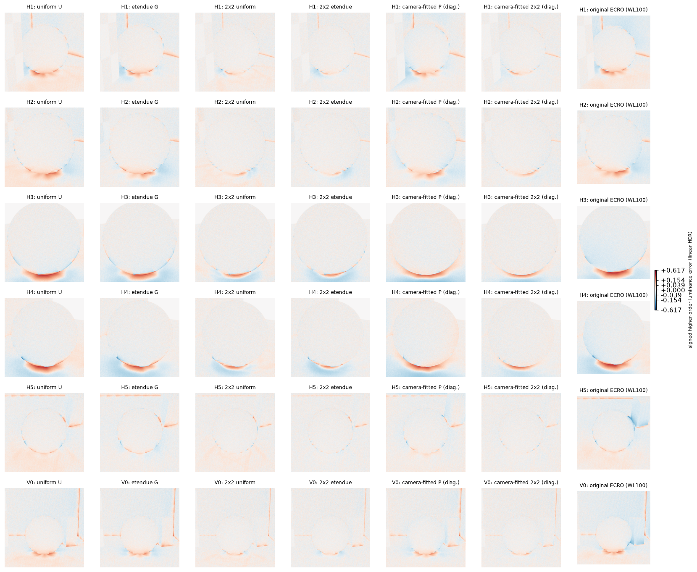
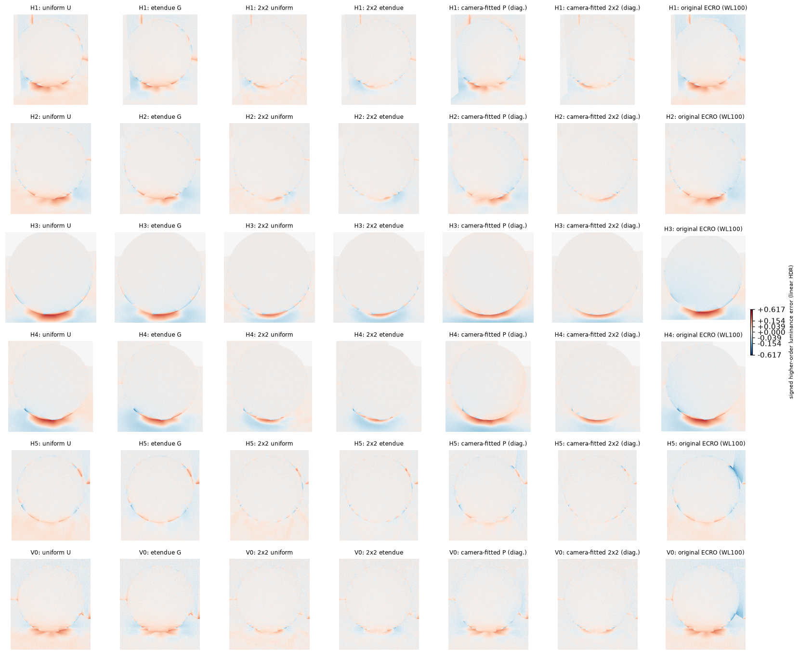
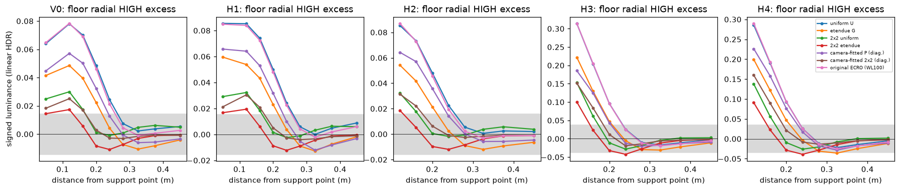
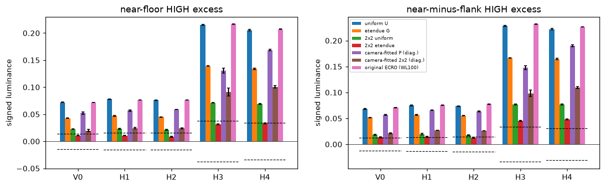
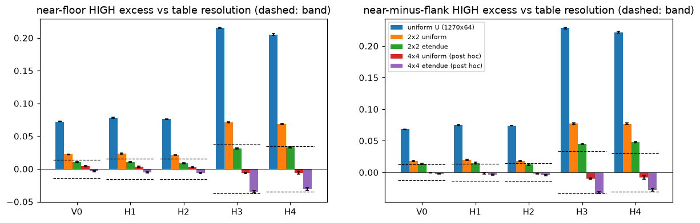
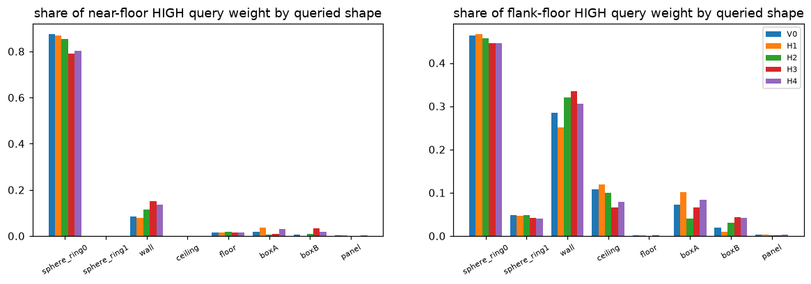
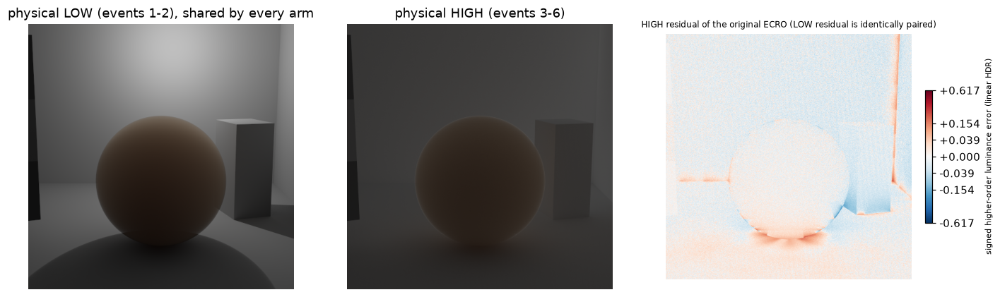

WL112 — SSS near-contact artifact resolution
Signed error maps share one absolute scale (max |error| 0.6167 linear HDR luminance, sqrt display). Raw renders, no denoising.
{
"stageA": "QUALIFIED",
"stageB": "NONE",
"classification": "NOT_RESOLVED"
}
F0_V0_reference_vs_original_ECRO_render_and_higher_order_error.png

F0_physical_table_arms_signed_higher_order_error_full_frame_six_cameras.png

F0_physical_table_arms_signed_higher_order_error_contact_crops_six_cameras.png

F0_floor_radial_higher_order_excess_physical_table_arms.png

F0_contact_endpoints_per_camera_physical_table_arms.png

F0_post_hoc_resolution_2x2_vs_4x4_contact_endpoints.png

F0_queried_shape_share_of_near_and_flank_floor_higher_order.png

F0_V0_low_and_high_attribution.png